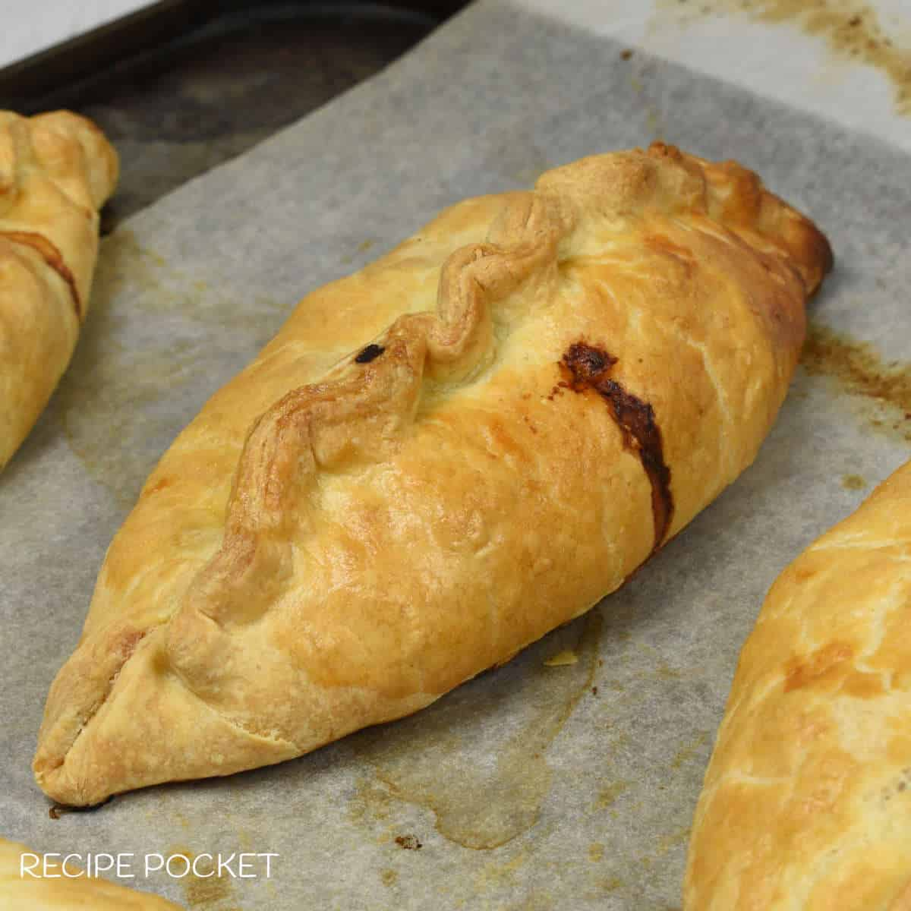

CORNISH PASTIES

INGREDIENTS
- 100g of pastry flour
- 50g of fat
- 1 small carrot
- 1 small onion
- 50g of meat
METHOD
- Wash vegetable and cut into cubes
- cook the meat
- Add meat and vegetable in a pan and prepare filling
- Sift flour in a mixing bowl
- Add fat to flour and rub in with your finger tips
- Add 2 to 3 spoons of water to the mixture
- Mix it, roll and cut
- Add filling and mould